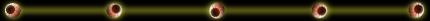

The revenant is an undead being who is on an unholy mission of vengeance. Death will not stop a revenant from accomplishing its goals. Revenants can reincarnate again and again until they have completed their tasks. The body of a revenant is a loose jumble of bones and rotting flesh held together by the bonds of purpose.
Ghoul | Lich | Mummy | Vampire | Spirit | Ghost | Zombie | Haunt | Specter | Revenant | Wight | Banshee | Afreet | Nightmare | Dracolich
Home | Help Summary